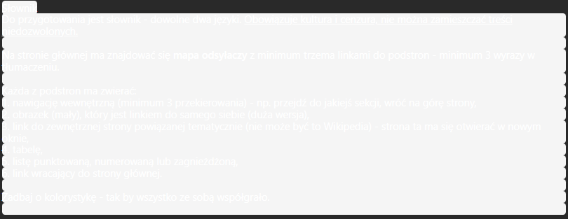

Szanowna Pani Agnieszko Berkman,
Bardzo serdecznie proszę, aby następnym razem, gdy będzie Pani tworzyła zadanie na Teams, upewniła się Pani, że
jego tekst jest prawidłowo sformatowany i wyświetla się prawidłowo, a także działa, na wszystkich urządzeniach
bez względu na ustawienia aplikacji Teams.
Jak nie ciężko się domyślić tekst, który na poniższym zrzucie ekranu jest praktycznie niewidoczny, jest
poleceniem zawierającym kluczowe elementy zadania.
